Godot for Roblox builders
You know Roblox Studio. This page shows where each Studio habit lives in Godot: where things are on screen, how to move the camera, what nodes and scenes are, how to run your world, and where the terrain addon is installed.

What you'll learn
- A clickable tour of the whole editor, with the Roblox Studio window that matches each part.
- How to move the 3D camera: orbit, pan, zoom, fly, focus and the side views. Each one has a clip.
- What nodes and scenes are, and how to add, rename, reparent, hide and lock them.
- Godot's Move / Rotate / Scale gizmo (W / E / R), plus undo and the History dock.
- How to run your world (F6) and stop it (F8).
- The Roblox UI switch, which adds a Studio-style ribbon.
- Where the addon lives, and why the Plugins tab is empty.
- A filterable Roblox → Godot dictionary, a shortcut list and a short quiz.
Most of what you know still applies. The Explorer is now called the Scene dock, the Properties window is the Inspector, Play is F6, and Move / Rotate / Scale are W / E / R. Two things really are new: the camera controls are a little different, and everything in your world is a node. Both are explained below.
Five Godot words to know first
Godot uses a few words that Roblox doesn't. You'll see them on every page of this guide:
- Node
- One thing in your world: a light, a camera, a terrain, a mesh. Everything is a node. It's the same idea as a Roblox Instance (a Part, a Model, a Script…).
- Scene (
.tscnfile) - A tree of nodes saved as one file. The node at the top is the scene root. A scene is like a Roblox place, or a Model you can reuse many times.
- Dock
- A panel attached to the side of the editor (Scene, Inspector, FileSystem…). In Roblox these would be the Explorer and Properties windows.
- Viewport
- The big 3D view in the middle, where you see and build the world.
res://- Short for "the project folder".
res://tutorial/guide/first_world.tscnmeans "the filefirst_world.tscninside thetutorial/guidefolder of this project".
A quick first tour (10 minutes)
Open the example scene and try each step. Nothing here changes anything for good: you can undo all of it, or close the scene without saving. Tick each step as you finish it.
- Open the playground. In the FileSystem dock (bottom left), open
tutorialand double-click01_flat_playground.tscn. It opens as a new tab above the 3D view. - Look around. With the mouse over the 3D view: middle-drag to orbit, Shift+middle-drag to pan, the wheel to zoom. See Moving the camera.
- Fly. Hold the right mouse button and press W A S D (Q goes down, E goes up). Move the mouse to look around while you hold it.
- Focus. Click MarchingSquaresTerrain in the Scene dock, move the mouse over the 3D view and press F. The camera moves to frame the terrain.
- Add a node. Press Ctrl+A, type
Camera3Dand click Create. Then press F2 and rename itPlayerCamera. See Nodes & scenes. - Move it. Press W and drag the red arrow. Then press Ctrl+Z to undo the move.
- Run it. With the mouse over the 3D view, press F6. A game window opens and shows the pixel island. Press F8 to stop.
- Feel at home. Select the terrain and click Roblox UI in the second toolbar row. A Studio-style Model / Edit ribbon appears.
Close the scene without saving when you're done (Scene → close the tab and answer "Don't Save"). The playground stays clean for the next page.
The editor at a glance
Click a numbered marker (or a name in the list under the picture) to see what that part of the editor does. The rest of this section covers each region in more detail.

The main menu bar
The very top-left of the window has five menus: Scene, Project, Debug, Editor, Help. You'll use two of them most:
- Scene has New Scene, Open Scene and Save, like Roblox's File menu.
- Project has Project Settings (used below) and exporting the game.
Main-screen buttons and play buttons
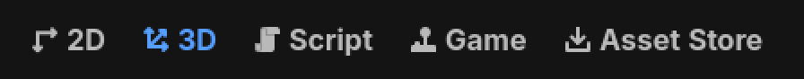
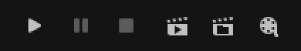
If the centre of the window suddenly turns into a code editor or a flat 2D canvas, you've clicked Script or 2D. Click 3D to go back.
The docks: Scene, Inspector, FileSystem, Output
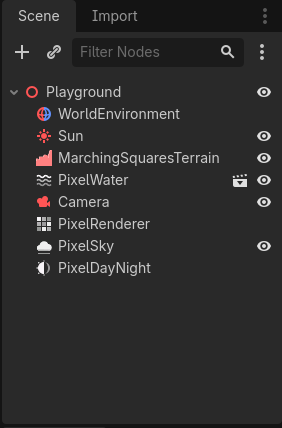
Playground is the scene root and everything under it is a child node.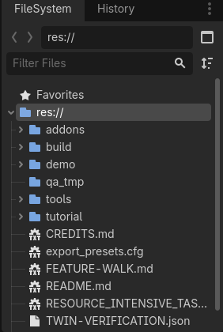
res://. The tutorial scenes are in tutorial/.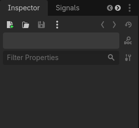
When you click a node, the Inspector fills with that node's properties. Every kind of node shows different properties:
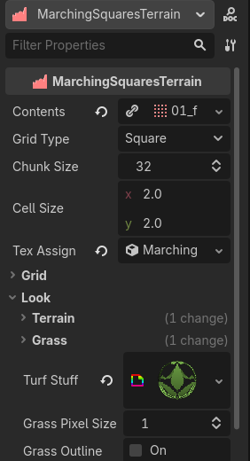
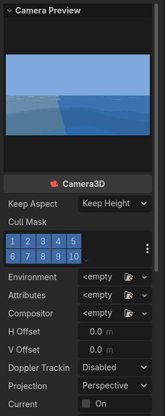
The Inspector works like the Properties window. Click a thing, edit its values. The Filter Properties box at the top works like the Properties search bar. Grey arrows (▸) fold groups open and closed.
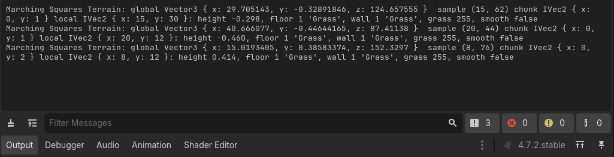
The two viewport toolbar rows
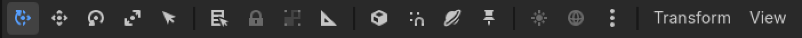
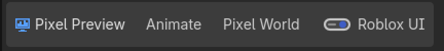
Row 2's buttons have their own pages: Pixel Preview on The pixelizer, Pixel World on Your first world and Sky, weather, water & effects, and Roblox UI on Greyboxing with the Roblox UI.
Moving the 3D camera
All of these work while the mouse pointer is over the 3D view. Pick a gesture to watch its clip.
Roblox orbits with a right-drag. In Godot, hold the middle button (press the wheel down) and drag.
This is the closest match to Studio's right-drag + WASD. While you hold the right button, moving the mouse turns the camera to look around. (The clip mostly shows the flying, not the turning. In practice you steer with the mouse as you fly.)
If you get lost ("where did my world go?"), select the terrain in the Scene dock and press F.
Snapping to an axis also switches the view to Orthogonal (flat, no perspective). The label says, for example, "Right Orthogonal [auto]". To get a normal 3D view back, press Kp 5 (5 on the number pad) or choose Perspective in the Perspective menu.
It lists every camera preset. See the reference below for the full list.
The big change is that orbit uses the middle button, not the right button. The right button is for flying (hold it with WASD). If you keep right-dragging to orbit, the camera will turn in place instead.
Camera reference
Orbit
Tumble around the view's pivot.
- Gesture
- Middle-mouse drag
- Roblox
- Right-drag
Pan
Slide the view without rotating it.
- Gesture
- Shift + middle-mouse drag
- Roblox
- Middle-drag
Zoom
Move the camera closer or further. A distance ruler flashes on the left.
- Gesture
- Mouse wheel
- Roblox
- Scroll
Fly / free-look
First-person movement. The mouse turns the camera while the right button is held.
- Gesture
- Hold RMB + W/A/S/D, Q down, E up
- Roblox
- Right-drag + WASD
Focus selection
Frame the selected node.
- Key
- F
View gizmo (nav cube)
Click an axis to snap to that side. Switches to Orthogonal ("[auto]").
Top / Bottom View
Look straight down / up.
- Keys
- Kp 7 / Alt+Kp 7
Left / Right View
- Keys
- Alt+Kp 3 / Kp 3
Front / Rear View
- Keys
- Kp 1 / Alt+Kp 1
Switch Perspective / Orthogonal View
Toggle between normal 3D (perspective) and flat technical (orthogonal) views. Use it to get back to 3D after the nav cube.
- Key
- Kp 5
Perspective · Orthogonal
Pick one projection directly.
Auto Orthogonal Enabled
When on, snapping to a side view switches to Orthogonal automatically. That's what the "[auto]" label means.
Lock View Rotation
Stops the view from being rotated.
Display Normal / Wireframe / Overdraw / Lighting / Unshaded
How the 3D view draws things. Normal is the usual look; Wireframe shows the mesh lines. Display Advanced… has more modes.
View Environment / Gizmos / Transform Gizmo / Grid
Show or hide the sky/environment, node icons, the move handles and the grid in this viewport.
1 / 2 / 3 / 4 Viewports
Split the 3D area into several views (with "Alt" layouts for 2 and 3).
- Keys
- Ctrl+1 … Ctrl+4 (Alt layouts: Ctrl+Alt+2/3)
Gizmos ▸
Submenu to show/hide each kind of node icon (lights, cameras…).
View Origin · View Grid
Show the world origin lines and the floor grid.
- Key
- # toggles the grid
Preview Translation ▸ · Settings…
Preview Translation is a submenu; Settings… opens the viewport settings.
While a terrain node is selected, the number keys 1–9 switch terrain tools, and shortcuts like Ctrl+1 (1 Viewport) don't reach the editor. If the view is stuck in four viewports, click a non-terrain node (for example the scene root) first, then press Ctrl+1.
Nodes & scenes
A scene is a tree of nodes, saved as a .tscn file. The top node is the scene root. In the playground the root is Playground, and every other node is its child, indented under it. A child moves with its parent, exactly like a Part inside a Model.
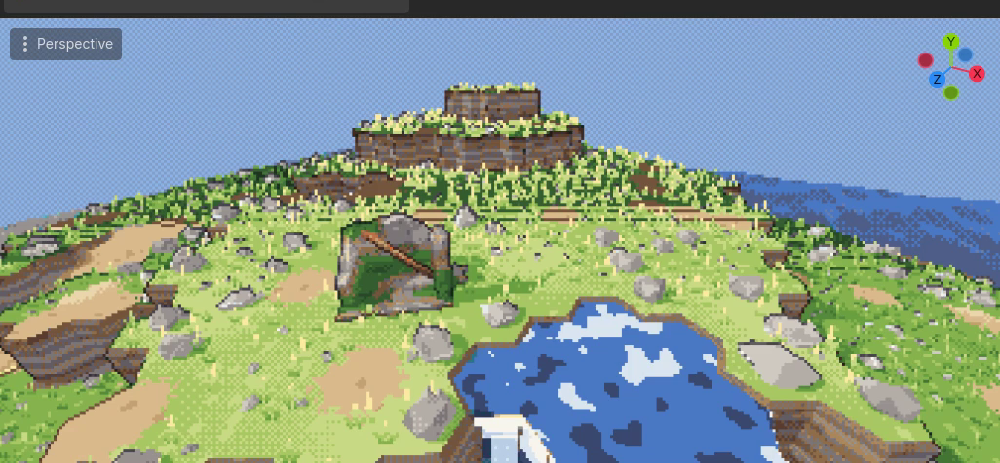
hex_island. No matter how detailed a world gets, it is still one tree of nodes in one .tscn file.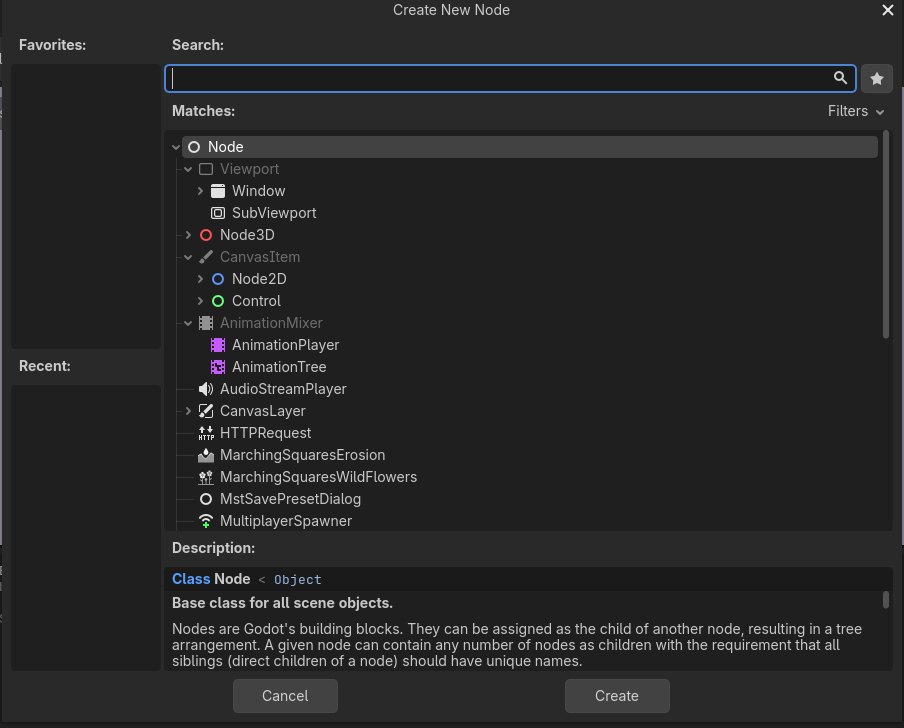
MarchingSquaresErosion, MarchingSquaresWildFlowers and MstSavePresetDialog here, and MarchingSquaresTerrain is inside the folded Node3D branch; typing its name in the search box finds it), a Description panel, Favorites and Recent.The new node is added as a child of whatever node is selected. Select the scene root first if you want it at the top level.
Names must be unique among siblings (two children of the same parent can't share a name). Godot adds a number if you try.
PlayerCamera onto MarchingSquaresTerrain. It becomes a child and shows indented under it.This works just like dragging an object into a Model in the Explorer.
The eye at the right of each 3D node's row hides or shows it in the viewport.
Clicking the eye on MarchingSquaresTerrain does not visibly hide the terrain. The pixel renderer draws the terrain surface through its own pipeline. That's why the clip demonstrates with the Sun instead.
A locked node can't be picked by clicking in the 3D view, so you can't nudge it by accident. Shortcuts: Ctrl+L to lock, Ctrl+Shift+L to unlock.
hex_island tab and back. 01_flat_playground(*) has unsaved changes.Open a scene by double-clicking its .tscn in the FileSystem, or with Scene → Open Scene. Ctrl+S saves the current tab. Scene → New Scene starts a blank one. Your first world shows this step by step.
Scene dock reference
Add Child Node (+)
Opens Create New Node. The new node goes under the selected node.
- Shortcut
- Ctrl+A
- Roblox
- Insert Object (the + next to an Explorer item)
Instance Child Scene (chain icon)
Drops a whole saved scene in as a child (an instance). Edit the original and every copy updates.
- Roblox
- Inserting a Model / Package
Filter Nodes
Type to show only matching nodes in a big tree.
Rename
Inline name edit. Sibling names must be unique.
- Shortcut
- F2 or double-click
Reparent
Drag a node onto another node to make it a child.
Visibility (eye)
Hide/show in the viewport. Doesn't visibly hide the pixel-rendered terrain surface.
Lock
"Lock selected node, preventing selection…". Adds a padlock badge.
- Shortcuts
- Ctrl+L lock · Ctrl+Shift+L unlock
- Roblox
- Locked property / Lock tool
Scene tabs
One tab per open scene; (*) = unsaved. The + at the end opens a new empty tab.
New / Open / Save Scene
Create, open or save a .tscn. Double-click a scene in FileSystem to open it.
- Save
- Ctrl+S
Remote / Local
Remote shows the live tree of the running game; Local is your editable scene.
Move, rotate & scale (the gizmo)
Select any 3D node and a coloured gizmo (handles) appears on it: red = X, green = Y (up), blue = Z, the same colours as Roblox. Pick the mode in toolbar row 1 or with a key, then drag a handle.
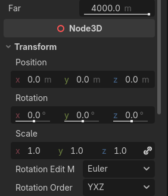
| Key | Mode | Handles | Roblox |
|---|---|---|---|
| Q | Select | none, just picks things | Select (Ctrl+1) |
| W | Move | 3 arrows + plane squares | Move (Ctrl+2) |
| E | Rotate | 3 rings | Rotate (Ctrl+4) |
| R | Scale | 3 box-ended handles | Scale (Ctrl+3) |
Stud and degree snapping are the snap toggle (magnet-style icon) in toolbar row 1. Like Roblox, it rounds moves and turns to fixed steps. If you'd rather have Studio's own layout, switch on Roblox UI: its ribbon has Move / Scale / Rotate plus 1.0 m and 45° snap boxes.
On a terrain, the letter keys may belong to terrain tools while a tool is active. If W doesn't seem to do anything, click the mode button in toolbar row 1 instead.
Undo, redo & the History dock
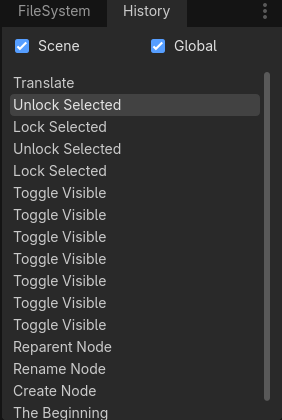
- Ctrl+Z = Undo, Ctrl+Shift+Z = Redo. Each gizmo drag is one step.
- The History dock's Scene and Global checkboxes choose which actions it lists: this scene's, editor-wide ones, or both.
Same keys as Studio, with one difference: Redo is Ctrl+Shift+Z here. Studio has no list like the History dock, so use it to see what you've done so far.
Running your world
| Key | Button | What it does |
|---|---|---|
| F6 | Run Current Scene | Runs the scene in the active tab. This is the one you'll use. |
| F5 | ▶ Run Project | Runs the project's main scene, whichever tab is open. |
| F8 | ⏹ Stop | Closes the game window and returns to editing. |
| — | ⏸ Pause | Freezes the running game. |
- The game window is titled "Marching Squares Terrain (DEBUG)". It's a real window that you can move and resize.
- While the game runs, the Scene dock shows a Remote / Local switch. Remote lets you inspect the live game's tree.
- Stopping prints
--- Debugging process stopped ---in the Output. That's normal, not an error.
F6 is Play and F8 is Stop. Unlike Studio, the game runs in its own window, and changes you make in the editor while it runs don't carry into that window. Stop, edit, and run again.
The Roblox UI switch
If Godot's toolbars still look unfamiliar, the addon has a switch that brings back Studio's layout. Select the terrain (or a builder node) and flip Roblox UI in toolbar row 2. A ribbon appears with Model and Edit tabs and Select, Move, Scale, Rotate, a pivot tool, a Geometric group with a move-snap 1.0 m box and a rotate-snap 45° box, then snap, duplicate, mirror and anchor buttons. It's laid out like Studio's Model tab.
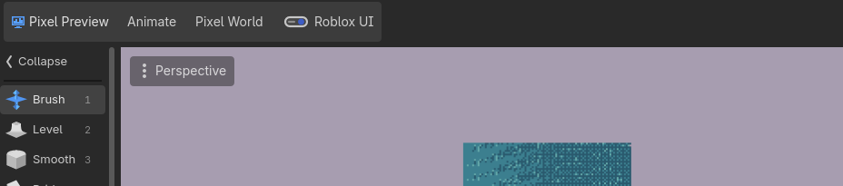
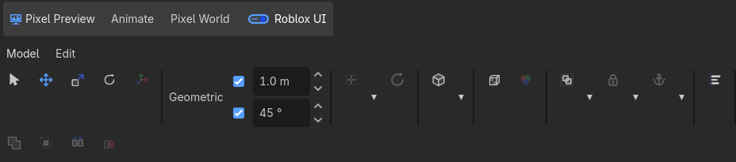
Drag across the picture to compare off and on.
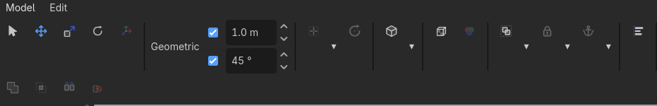
Leaving it on is fine. It doesn't change your scene, only which buttons you see.
Where the addon lives
The terrain, the pixel look and the builder all come from one addon, MarchingSquaresTerrain. Its files are in the addons folder:
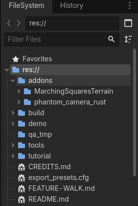
res://addons/ holds MarchingSquaresTerrain/ (and phantom_camera_rust/, a camera helper).It's written in Rust and loaded as a GDExtension, a native add-on that Godot loads when the editor starts. That means it does not appear where Godot's usual script plugins go:
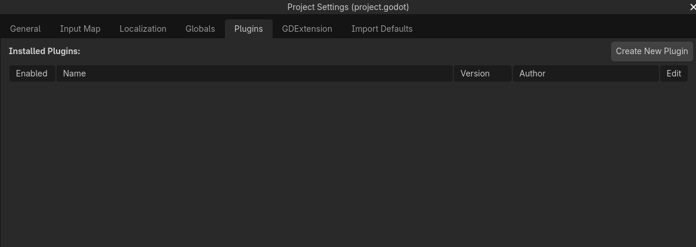
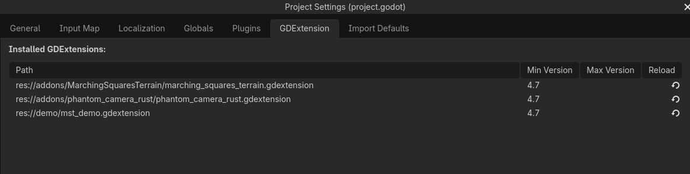
res://addons/MarchingSquaresTerrain/marching_squares_terrain.gdextension (Min Version 4.7), plus phantom_camera_rust and res://demo/mst_demo.gdextension.Many Godot tutorials say "enable the plugin in Project Settings → Plugins". That doesn't apply here: there's nothing to tick. If the terrain's nodes show up in Create New Node, the addon is loaded.
This is less like a Toolbox plugin you install and more like a feature built into Studio. It's on as soon as the project opens.
Roblox → Godot dictionary
Type a Roblox word (or a Godot one) to find its partner. The chips narrow the list by topic.
| Roblox Studio | Godot / this addon | Notes | Topic |
|---|---|---|---|
| Explorer | Scene dock (scene tree) | Left side. Add, rename, reparent, hide, lock. ↗ | windows |
| Properties | Inspector | Right side. Shows the selected node's properties. ↗ | windows |
| Output window | Output bottom panel | Engine messages and errors. ↗ | windows |
| Big mode tabs (Home / Model…) | Main-screen buttons 2D · 3D · Script · Game · Asset Store | Switch the centre area. Stay in 3D. ↗ | windows |
| Model tab ribbon | Roblox UI switch → Model / Edit ribbon | Addon feature, toolbar row 2. ↗ | windows |
| Workspace / the place | The scene and its root node (.tscn) | One scene = one file. ↗ | objects |
| Instance (Part, Model…) | Node | Everything in a scene is a node. ↗ | objects |
| Part | A MeshInstance3D, or the addon's PixelBuilderMesh | Builder parts are on page 9. | objects |
| Model / grouping | A Node3D holding children, or a saved scene you instance | Drag nodes under it to group. ↗ | objects |
| Inserting a Model / Package | Instance Child Scene (chain icon) | Next to + in the Scene dock. ↗ | objects |
| Insert Object | Add Child Node (+, Ctrl+A) | Opens Create New Node. ↗ | objects |
| Visible / Transparency toggle | The eye icon on a node's row | Doesn't visibly hide the pixel-rendered terrain. ↗ | objects |
| Lock | Lock (padlock, Ctrl+L) | Unlock: Ctrl+Shift+L. ↗ | objects |
| Terrain Editor | Select a MarchingSquaresTerrain node → terrain toolbar | See Sculpting. | tools |
| Move / Scale / Rotate tools | Gizmo W / R / E, or the Roblox UI ribbon | Note E = rotate, R = scale. ↗ | tools |
| Select tool | Q Select mode | Toolbar row 1. ↗ | tools |
| Stud / degree snapping | Gizmo snap toggle; ribbon 1.0 m / 45° boxes | ↗ | tools |
| Position / Orientation / Size fields | Inspector Transform: Position / Rotation / Scale | Scale is a multiplier, not a size in studs. ↗ | tools |
| Undo / Redo | Ctrl+Z / Ctrl+Shift+Z + History dock | ↗ | tools |
| Right-drag orbit | Middle-drag orbit | The biggest habit to relearn. ↗ | camera |
| Middle-drag pan | Shift + middle-drag | ↗ | camera |
| Right-drag + WASD fly | Hold RMB + WASD (Q/E down/up) | ↗ | camera |
| Scroll zoom | Mouse wheel | ↗ | camera |
| Zoom to selection (F) | F Focus | Same key. ↗ | camera |
| Play | F6 Run Current Scene (F5 runs the main scene) | Opens a separate window. ↗ | testing |
| Stop | F8 / ⏹ | ↗ | testing |
| Toolbox / where assets live | FileSystem dock (res://) + Asset Store | Your own files. ↗ | files |
| Saving the place (File → Save) | Ctrl+S saves the scene as a .tscn | Page 2 walks through it. | files |
| Plugins / Manage Plugins | GDExtension tab in Project Settings (Plugins tab is empty) | ↗ | files |
A longer version with every page's terms is on Shortcuts & glossary.
Shortcuts from this page
| Keys | What it does | Where the mouse must be |
|---|---|---|
| Middle-drag | Orbit | 3D view |
| Shift+middle-drag | Pan | 3D view |
| Wheel | Zoom | 3D view |
| RMB + WASD / Q E | Fly / down / up | 3D view |
| F | Focus selected | 3D view |
| Kp 7 / Kp 1 / Kp 3 | Top / Front / Right view (add Alt for the opposite side) | 3D view |
| Kp 5 | Perspective ↔ Orthogonal | 3D view |
| Ctrl+1…4 | 1–4 viewports (deselect the terrain first) | Anywhere |
| # | Toggle grid | 3D view |
| Q W E R | Select / Move / Rotate / Scale | 3D view |
| Ctrl+A | Add Child Node | Anywhere |
| F2 | Rename node | Scene dock |
| Ctrl+L / Ctrl+Shift+L | Lock / unlock | Anywhere |
| Ctrl+Z / Ctrl+Shift+Z | Undo / redo | Anywhere |
| Ctrl+S | Save scene | Anywhere |
| F6 / F5 / F8 | Run scene / run project / stop | Anywhere |
Tips for the first week
- Lost in the void? Select the terrain in the Scene dock and press F over the 3D view.
- View looks flat and weird? You probably clicked the nav cube and you're in Orthogonal. Press Kp 5.
- Screen split into four? Click a non-terrain node, then press Ctrl+1.
- Something's red in the Output? Read the top line. It usually names the node involved. Troubleshooting lists common ones.
- The editor camera doesn't stay put. Reopening a scene doesn't restore where the editor camera was. Press F on the terrain to find it again.
- Experimenting? Work in a copy, or close without saving. The tabs'
(*)tells you what's unsaved.
Check yourself
1. You want to orbit around the island. Which mouse button do you hold?
2. Where do you change a node's properties (Roblox's Properties window)?
3. Which key runs the scene you're looking at?
4. Project Settings → Plugins is empty. Is the terrain addon broken?
5. Which key is Scale?
I snapped to a side view with the nav cube and now everything looks flat. How do I get 3D back?
Snapping switched to Orthogonal (the label says "… Orthogonal [auto]"). Press Kp 5, or open the Perspective menu and choose Perspective.
What's the difference between a node and a scene?
A node is one thing (a light, a terrain). A scene is a whole tree of nodes saved as one .tscn file. You can drop one scene into another as an instance, like inserting a Model.
I clicked the terrain's eye icon and the terrain is still there. Why?
The pixel renderer draws the terrain surface through its own pipeline, so the eye on MarchingSquaresTerrain doesn't visibly hide it. Toggling other nodes, like the Sun, does show a change.
How do I make a node a child of another one?
Drag it onto the other node in the Scene dock. It becomes indented under it and will move with it.